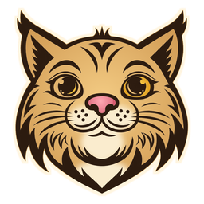
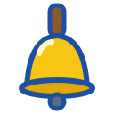
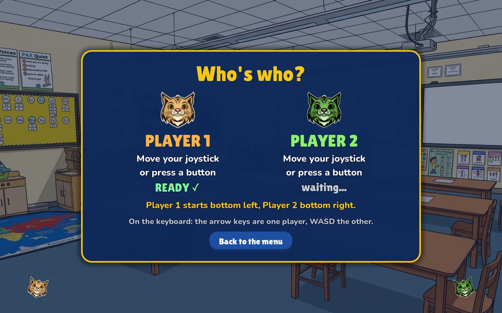

Maze of the Bobcats
Une course-poursuite dans un labyrinthe avec Bobbie le lynx, créée pour la borne d'arcade de l'école primaire Bellview à Ashland, dans l'Oregon. Mange les pastilles, attrape les Bobcat Tickets et garde une longueur d'avance sur les enseignants !
Pour l'école Bellview Borne d'arcade · Joystick et boutons


Allez, les Bobcats !
Six labyrinthes d'école
Morning Bell, Math Class, Library, The Reflection Form, Lunch & Recess et Homework Time : chacun ressemble à un coin de l'école.

Une surprise dans chaque labyrinthe
Une sonnerie qui renvoie les enseignants en salle des profs, des nombres à manger dans l'ordre, des zones de silence où les enseignants ne te voient pas, des peaux de banane et plus encore.
Bobcat Tickets
Attrape un Bobcat Ticket et les enseignants filent en salle des profs. Attrape-les en chemin pour gagner plein de points !
De vrais enseignants en gentils fantômes
L'école peut ajouter ses propres enseignants en fantômes de dessin animé, chacun avec une phrase drôle quand il t'attrape. Leurs images restent dans la borne et ne sont jamais mises en ligne.

Des bonus d'école
Un Hall Pass pour passer devant un enseignant, une Recess Bell qui les fige, des Sneakers pour courir plus vite et Pizza Friday, où chaque pastille compte double.

Un album d'autocollants
15 autocollants à gagner pour des exploits amusants, comme finir un niveau sans te faire attraper. Écris ton nom à la fin de la partie pour les garder.

Des classements
Les meilleurs scores du jour, de la semaine et de tous les temps : il y a un nouveau champion chaque jour.
Un ou deux joueurs
Joue seul ou avec un ami : à tour de rôle, chacun dans son labyrinthe, en équipe dans le même labyrinthe, ou ensemble en même temps, chacun avec son joystick.

Conçu pour une borne d'arcade
Un joystick et de gros boutons d'arcade, cinq niveaux de difficulté de Recess à Principal's Office, et une démo qui se lance quand personne ne joue.
Captures d'écran



Comment jouer
Mange toutes les pastilles. Dirige Bobbie avec le joystick (ou glisse le doigt sur l'écran) et mange toutes les pastilles pour finir le labyrinthe. De temps en temps, une friandise apparaît pour des points en plus.
Attention aux enseignants. Si un enseignant attrape Bobbie, tu perds une vie. Chacun te poursuit à sa manière, et ils deviennent plus rapides et plus malins au fil du jeu.
Renverse la situation. Mange un Bobcat Ticket dans un coin et les enseignants retournent en salle des profs. Attrape-les en chemin : chaque enseignant attrapé à la suite rapporte davantage.
Termine les six labyrinthes et passe au 2e tour, un peu plus rapide. Jusqu'où iras-tu ?
Maze of the Bobcats a été créé uniquement pour la borne d'arcade de l'école Bellview : il n'est donc pas disponible en téléchargement. Le jeu est en anglais.